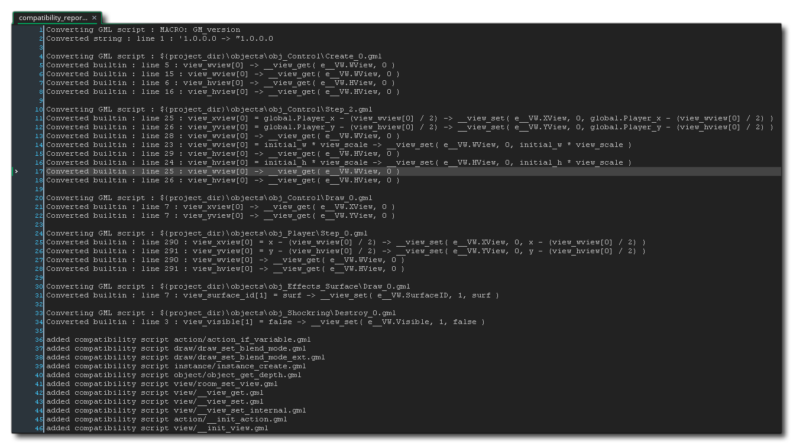

Für die Benutzer von GameMaker: Studio 1.4 ist es mit GameMaker Studio 2 zunächst etwas verwirrend, da einige Änderungen an der Art und Weise vorgenommen wurden, wie Projektressourcen, Bearbeitung und Programmierung gehandhabt werden. Diese Änderungen bedeuten, dass weder die IDE noch die GameMaker Language (GML) die unten aufgeführten Punkte unterstützt. Dies bedeutet jedoch nicht, dass Sie mit GameMaker Studio 1.4 erstellte Spiele nicht in GameMaker Studio 2 importieren können. Die hier aufgeführten Funktionen werden in Kompatibilitätsskripts umgewandelt
In GameMaker: Studio 1.4 gab es eine separate Hintergrundressource, in der Sie Bilder hinzufügen können, die als Hintergrund verwendet werden. In GameMaker Studio 2 alle Bilder als Sprites betrachtet, und die Verwendung, die Sie auch verwenden, hängt von der Ebene ab, der sie im Raum zugewiesen sind. Dies bedeutet, dass es keine "Hintergrund" -Ressource mehr gibt und dass die folgenden Funktionen veraltet sind:
Zeichnungshintergrund draw_background_ext draw_background_stretched draw_background_stretched_ext draw_background_part draw_background_part_ext draw_background_general draw_background_tiled draw_background_tiled_ext Hintergrundname background_exists Hintergrund_Get_Name Zeichnungshintergrund draw_background_ext draw_background_stretched draw_background_stretched_ext background_get_width background_get_height background_get_transparent background_get_smooth background_get_preload background_get_uvs background_get_texture background_set_alpha_from_background background_create_from_surface background_create_color background_create_colour background_create_gradient Hintergrund_add background_replace Hintergrund_add_alpha background_replace_alpha Hintergrund_Löschen background_duplicate Hintergrund_zuweisen Hintergrund_save background_prefetch background_prefetch_multi Hintergrund_flush background_flush_multi room_set_background Weitere Informationen zu Hintergrundebenen finden Sie im Abschnitt zum Raumeditor. Weitere Informationen zu den Funktionen zum Steuern von Hintergrundebenen mithilfe von Code finden Sie unter Hintergrundebenen.
Wie bei den Hintergründen (oben erklärt) existiert die Kachel-Ressource von GameMaker: Studio 1.4 nicht mehr, stattdessen haben wir Kachel-Sets in GameMaker Studio 2. In GameMaker: Studio 1.4 verwendeten Kacheln eine Hintergrundressource und wurden in verschiedenen Tiefen im Raumeditor oder über Code platziert, allerdings war die verwendete Methode nicht besonders flexibel und auch nicht so effizient. Um diese Probleme zu lösen, werden in GameMaker Studio 2 Tilesets nun aus einer Sprite-Ressource erstellt und können verschiedene Eigenschaften haben (wie Animation oder automatisches Tiling). Sie werden dann auf eine Kachelkartenebene innerhalb des Raumeditors oder über Code platziert. Aufgrund dieser Änderungen sind die folgenden Funktionen nun veraltet:
tile_get_x tile_get_y tile_get_left tile_get_top tile_get_width tile_get_height tile_get_depth tile_get_visible tile_get_xscale tile_get_yscale tile_get_alpha tile_get_background tile_set_visible tile_set_background tile_set_region tile_set_position tile_set_depth tile_set_scale tile_set_blend tile_set_alpha tile_get_count tile_get_id tile_get_ids tile_get_ids_at_depth tile_add tile_exists tile_delete tile_layer_hide tile_layer_show tile_layer_delete tile_layer_shift tile_layer_find tile_layer_delete_at tile_layer_depth room_tile_add room_tile_add_ext room_tile_clear Sie können mehr über Kachelsätze im manuellen Abschnitt des Kachelsatzeditors erfahren und erfahren, wie Sie diese im Raumeditor im Abschnitt über Kachelebenen verwenden können. Weitere Informationen zu den Funktionen, mit denen Hintergrundebenen mithilfe von Code gesteuert werden, finden Sie unter Tilemap-Layer.
Die Art und Weise, wie Objekte in GameMaker Studio 2 hat sich aufgrund der Einführung von Ebenen im GameMaker Studio 2 leicht geändert. Es gibt immer noch die Variable "depth", aber sie wird jetzt nur noch aus Kompatibilitätsgründen verwendet und Sie können die Tiefe für Objekte, nur für Instanzen, nicht mehr abrufen oder festlegen. Dies macht folgende Funktionen überflüssig:
object_get_depth object_set_depth Weitere Informationen zu Objektressourcen finden Sie im Handbuchabschnitt des Objekt-Editors und in den Funktionen, die Objekte mit Code aus dem Abschnitt Objekte steuern.
GameMaker: Studio 1.4 hatte zwei verschiedene Sound-APIs, eines, das das Vermächtnis verwendete sound_ Funktionen (das war nur wirklich gültig für die HTML5 - Zielplattform), und die andere, die die verwendet audio_ Funktionen. Die Audio-API wurde in GameMaker Studio 2 verbessert und erweitert, wodurch die folgenden veralteten Funktionen überflüssig werden:
Soundname sound_exists sound_get_name sound_get_kind sound_get_preload sound_exists sound_restore sound_delete sound_play sound_loop sound_stop sound_stop_all Sound_Anzeige Lautstärke Sound_Fade sound_global_volume audio_music_gain audio_music_is_playing audio_new_system audio_old_system audio_pause_musik audio_spiel_musik audio_resume_musik audio_stop_musik Audiosystem Weitere Informationen zu Audioressourcen finden Sie im Abschnitt "Manual" des Sound Editors und in den Funktionen, die Audiodaten mit Code aus dem Abschnitt " Audio" steuern.
Bei der Verwendung von 3D - Modellen oder Primitiven in GameMaker: Studio 1.4 mussten Sie den d3d_ Funktionen. Diese verwendeten eine veraltete API zum Zeichnen und waren in vielen Fällen nicht direkt mit der Direct 3D API oder sogar mit 3D selbst verbunden. Mit dem Aufkommen von Vertex Buffern, Matrizen und Kameras in GameMaker Studio 2 wurden die folgenden Funktionen überflüssig gemacht:
d3d_start d3d_end d3d_set_perspektive d3d_set_hidden d3d_set_depth d3d_set_lighting d3d_set_shading d3d_set_fog d3d_set_culling d3d_set_zwriteenable d3d_set_projektion d3d_set_projektion_ext d3d_set_projection_ortho d3d_set_projection_perspektive d3d_transform_set_identität d3d_transform_set_translation d3d_transform_set_scaling d3d_transform_set_rotation_x d3d_transform_set_rotation_y d3d_transform_set_rotation_z d3d_transform_set_rotation_axis d3d_transform_add_translation d3d_transform_add_scaling d3d_transform_add_rotation_x d3d_transform_add_rotation_y d3d_transform_add_rotation_z d3d_transform_add_rotation_axis d3d_transform_stack_clear d3d_transform_stack_empty d3d_transform_stack_push d3d_transform_stack_pop d3d_transform_stack_top d3d_transform_stack_discard d3d_transform_vertex d3d_light_define_ambient d3d_light_define_direction d3d_light_define_point d3d_light_enable d3d_primitive_begin d3d_primitive_begin_texture d3d_primitive_end d3d_vertex d3d_vertex_farbe d3d_vertex_colour d3d_vertex_texture d3d_vertex_texture_color d3d_vertex_texture_colour d3d_vertex_normal d3d_vertex_normal_color d3d_vertex_normal_colour d3d_vertex_normal_texture d3d_vertex_normal_texture_color d3d_vertex_normal_texture_colour d3d_draw_block d3d_draw_cylinder d3d_draw_cone d3d_draw_ellipsoid d3d_draw_wall d3d_draw_floor d3d_model_create d3d_model_destroy d3d_model_clear d3d_model_load d3d_model_save d3d_model_draw d3d_model_primitive_begin d3d_model_primitive_end d3d_model_vertex d3d_model_vertex_color d3d_model_vertex_colour d3d_model_vertex_texture d3d_model_vertex_texture_color d3d_model_vertex_texture_colour d3d_model_vertex_normal d3d_model_vertex_normal_color d3d_model_vertex_normal_colour d3d_model_vertex_normal_texture d3d_model_vertex_normal_texture_color d3d_model_vertex_normal_texture_colour d3d_model_block d3d_model_cylinder d3d_model_cone d3d_model_ellipsoid d3d_model_wall d3d_model_floor Sie können mehr über Vertex - Puffer erfahren hier, um mehr über Matrizen hier mehr über Kameras hier und mehr über die GPU - Funktionen hier.
Mit dem Aufkommen der Kamerafunktionen in GameMaker Studio 2 bedeutet dies, dass eine Reihe von view Variablen werden nicht mehr benötigt, speziell solche, die sich auf den Blick in den Raum beziehen und nicht auf den view_port (die immer noch verwendet wird). Es gibt auch ein paar Funktionen, um zu steuern, wie Dinge angezeigt werden, die in alten Versionen von GameMaker: Studio 1.4 verfügbar waren, die ebenfalls nicht mehr geeignet sind. Diese Variablen und Funktionen sind nachfolgend aufgeführt:
Ansicht_Objekt view_angle Ansicht_xview Ansicht_yview Ansicht_hview Ansicht_Übersicht view_hborder view_vborder Ansicht_hspeed Ansicht_vspeed display_set_windows_vertex_buffer_method display_get_windows_vertex_buffer_method display_set_windows_alternate_sync display_get_windows_alternate_sync room_set_view Sie können mehr über Kameras im manuellen Abschnitt über Kameras und das Display erfahren.
GameMaker Studio 2 verschiebt viele eingebaute Funktionen von früheren Versionen in Erweiterungen, was bedeutet, dass die folgenden Unterstützungsfunktionen von Drittanbietern als veraltet gelten:
ads_enable ads_disable ads_move ads_get_display_width ads_get_display_height ads_interstitial_available ads_interstitial_display ads_setup ads_engagement_available ads_engagement_launch ads_engagement_active ads_event ads_event_vorgeladen ads_set_reward_callback playhaven_add_notification_badge playhaven_hide_notification_badge playhaven_position_notification_badge playhaven_update_notification_badge pocketchange_display_reward pocketchange_display_shop analytik_event analytics_event_ext iap_event_queue iap_files_purchased iap_is_downloaded iap_product_files iap_product_status iap_store_status Immersion_play_effect Immersion_Stop Sie können die offiziellen YoYo Games Erweiterungen für Werbung und Analysen von ihrer Marktplatz-Seite erhalten.
Sowohl GameMaker: Studio 1.4 als auch GameMaker Studio 2 verfügen über eine visuelle Drag-and-Drop (DnD™) -Schnittstelle zum Erstellen Ihrer Spiele. Die Art und Weise, wie sie in GameMaker Studio 2 gehandhabt wird, unterscheidet sich jedoch stark von den vorherigen Methoden. Zuvor hatten alle DnD™ -Aktionen eigene Funktionen, die "hinter den Kulissen" arbeiteten, um die gewünschten Ergebnisse zu erzielen. Dies war jedoch nicht sehr transparent und führte zu zusätzlichen Kosten für die Funktionsaufrufe, was zu einer schlechteren Leistung führte. In GameMaker Studio 2 dies geändert, und jetzt werden alle Aktionen zu reinem Code kompiliert (und können bei Bedarf als solcher angezeigt werden), was bedeutet, dass die folgenden Aktionsfunktionen veraltet sind:
action_path_old action_set_sprite action_draw_font action_draw_font_old action_fill_farbe action_fill_colour action_line_color action_line_farbe action_highscore action_set_relativ action_move action_set_motion action_set_hspeed action_set_vspeed action_set_gravity action_set_riction action_move_point action_move_to action_move_start aktionsmove_random action_snap action_wrap action_reverse_xdir action_reverse_ydir action_move_kontakt action_bounce aktionspfad action_path_end action_path_position action_path_speed action_linear_step action_potential_step action_kill_object action_create_object action_create_object_motion action_create_object_random action_change_object action_kill_position action_sprite_set action_sprite_transform action_sprite_farbe action_sprite_farbe action_sound action_end_sound action_if_sound action_another_room action_current_room action_previous_room action_next_room action_if_previous_room action_if_next_room action_set_alarm action_schlaf action_set_timeline action_timeline_set action_timeline_start action_timeline_stop action_timeline_pause action_set_timeline_position action_set_timeline_speed aktionsmeldung action_show_info action_show_video action_end_game action_restart_spiel action_save_spiel action_load_spiel action_replace_sprite action_replace_sound action_replace_background action_if_empty action_if_collision aktion_if action_if_number action_if_object action_if_question action_if_dice action_if_mouse action_if_aligned action_execute_script action_inherited aktion_if_variable action_draw_variable action_set_score action_if_score action_draw_score action_highscore_show action_highscore_clear action_set_life action_if_life action_draw_life action_draw_life_images action_set_health action_if_health action_draw_health action_set_caption action_partsyst_create action_partsyst_destroy action_partsyst_clear action_parttype_create_old action_parttype_create action_parttype_farbe action_parttype_farbe action_parttype_life action_parttype_speed action_parttype_gravity action_parttype_secondary action_partemit_create action_partemit_destroy action_partemit_burst action_partemit_stream action_cd_play action_cd_stop action_cd_pause action_cd_resume action_cd_present action_cd_playing action_set_cursor action_webseite action_splash_web action_draw_sprite action_draw_background action_draw_text action_draw_text_transformiert action_draw_rectangle action_draw_gradient_hor action_draw_gradient_vert action_draw_ellipse action_draw_ellipse_gradient action_draw_line action_draw_arrow aktion_farbe aktionsfarbe action_font action_fullscreen action_snapshot action_effect Sie können mehr über den neuen DnD™ aus dem manuellen Abschnitt Drag and Drop Übersicht herausfinden.
Kompatibilitätsskripte
Wenn Sie ein Projekt importieren, das mit einer früheren Version von GameMaker Studio, funktionieren alle veralteten Funktionen weiterhin, da sie von der IDE automatisch in Kompatibilitätsskripts umgewandelt wurden. Was passiert, ist, dass GameMaker Studio 2 Ihr Projekt für alle veralteten Funktionen und Variablen analysiert, die Sie verwendet haben, und dann eine Reihe von Skripten mit diesen Funktionsnamen erstellt. Diese Skripts enthalten entweder die neue äquivalente Funktion oder ein kurzes Code-Script, das dieselbe Aktion wie die veraltete Funktion ausführt.
Wenn Sie ein GameMaker Studio 2 Projekt zum ersten Mal importieren, wird Ihnen ein Kompatibilitätsbericht ähnlich dem folgenden angezeigt: 
Der Hauptteil des Berichts zeigt, welche Objekte und Scripts betroffen waren und wo, während Sie am Ende eine Liste der Skripte finden, die für Ihr Projekt erstellt wurden. Sie können auf die mittlere Maustaste klicken  oder drücken Sie
oder drücken Sie  Klicken Sie auf eines der im Bericht aufgelisteten Skripte, um es zu öffnen und um zu sehen, was getan wurde. Beachten Sie, dass Skripts mit einer doppelten Unterstrichleiste vor dem Namen angezeigt werden (z. B. __global_object_depths ), dann sind dies Skripte, die von der IDE zur Kompatibilität erstellt wurden und keine Skripte sind, die aus veralteten Funktionen konvertiert wurden, so dass diese nicht manipuliert werden sollten, da sie für die anderen Kompatibilitätsskripts benötigt werden.
Klicken Sie auf eines der im Bericht aufgelisteten Skripte, um es zu öffnen und um zu sehen, was getan wurde. Beachten Sie, dass Skripts mit einer doppelten Unterstrichleiste vor dem Namen angezeigt werden (z. B. __global_object_depths ), dann sind dies Skripte, die von der IDE zur Kompatibilität erstellt wurden und keine Skripte sind, die aus veralteten Funktionen konvertiert wurden, so dass diese nicht manipuliert werden sollten, da sie für die anderen Kompatibilitätsskripts benötigt werden.
Wenn Sie mit der Überarbeitung des Kompatibilitätsberichts fertig sind, können Sie den Arbeitsbereich schließen. Wenn Sie jedoch etwas im Bericht überarbeiten müssen, können Sie ihn erneut finden, indem Sie im Notes- Bereich des Ressourcenbaums nachlesen.
Bitte beachten Sie, dass einige Funktionen in der GameMaker Sprache eingeführt wurden, um Kompatibilität mit älteren Projekten zu gewährleisten, die in diesen Kompatibilitätsskripten erscheinen. Diese Funktionen sollten jedoch niemals in eigenen Projekten verwendet werden. Eine Liste dieser Funktionen finden Sie im folgenden Abschnitt des Handbuchs: